D3D: Decoupled Diffusion Drafting for Asynchronous Speculative Decoding / 解耦扩散起草的异步推测解码
- 论文 arXiv:2611.06425，首版 2026-11-04 12:27:58 UTC
- 作者 Baoyou Chen、Ruiqiao Mei、Guancong Lin、Tao Song、Weihao Yuan、Qun Liu、Siyu Zhu
- 机构 上海创智学院，合作机构为上海科学智能研究院、复旦大学、南京大学、华为
- 代码 作者仓库 D3D 已核验可访问。本文实验数字均为论文报告值。
推测解码让起草器一次提交多枚候选，再由目标模型并行检查。D3D 用独立扩散起草器自己计算前缀表示，趁当前候选在验证时，同时计算下一轮可能用到的候选。它把块内的预测并行与块间的两阶段并行放在同一条解码链路里。
以目标模型为条件的扩散起草器可以并行预测块内候选，但新一轮仍要等待目标模型更新隐藏状态。即使生成整块只需一次前向，起草和验证也要轮流执行，限制了解码加速。
1. 背景和问题
1.1 一轮产出与执行依赖
自回归生成的输入在每一步都取决于刚刚提交的符号。同一个请求需要输出很长的解释、脚本或对话时，大模型反复为下一枚词元启动计算，上一枚词元尚未提交，下一次有效前向就缺输入。显卡上同一次前向可以同时处理许多位置，逐枚启动却无法直接利用这部分并行度。推测解码把这两种粒度拆开。较便宜的起草器先猜若干位置，目标模型在一次因果前向中得到各位置对应的预测，再从左往右验收。在第一个不通过的位置以后，候选所依赖的历史已经被改写，后面的草稿即使偶然等于某个正确答案，也不能越过断点当成已验证结果。目标模型在拒绝点补一枚词元，或者在整块接收后追加一枚词元，形成下一轮真正能使用的前缀。衡量起草好坏，关注的是从最左端起有多长一段连续接收，以及目标模型为这段产出做了多少工作。
这条链路至少有三种影响速度的因素。一是每轮交付词元数，决定解码同样长度需要多少轮。二是为了得到一块候选，起草侧要顺序走几步、走多少层。三是每次目标验证用什么上下文、检查多少位置。轻量自回归起草器的优点是生成分布自带词元间的因果关系，但草稿越长，顺序执行越多。块扩散起草用若干掩码一次性表达未来位置，前向时让掩码之间交换表示，一次输出整块的候选分布。它减少了块内的串行轮数，却未自动解决块与块的依赖。DFlash 一类方案会消费目标模型的中间表示。当前块校验完毕，新接收词元的目标隐藏状态才能成为下一块输入。这样的起草器即使完成单次前向很快，下一轮开始前也要等验证，起草侧的剩余开销仍直接累加到关键路径上。
目标隐藏状态的好处是把大模型已做的前缀建模借给起草器。让起草器自己编码完整的词元前缀，相当于收回这个捷径。独立起草如果只能预测通顺的语言，却不能在目标模型可能选的分支上连猜数步，就会把一次大验证换成多轮短接收。问题因此包含两个层面。模型方面要学习和指定目标相近的词元选择，且受过因果训练的底座还要适应在一个块里同时预测多个位置。系统方面要利用独立性预先准备几个可能发生的未来前缀。即使两张卡可以同时开工，准备分支太多会使起草时间拉长，准备分支太少又会使验证结果频繁找不到匹配草稿。部署效果由二者共同决定。
1.2 从“先猜答案”到“先猜校验会在哪里停”
设一轮草稿刚送给目标验证，当前确定前缀之后已有一条假设的候选路径。起草侧可以沿这条路径推测几类后继。目标可能接受到某一位置后改写该处的词元，也可能接受完整的候选块。后一种情形仍涉及验证器生成的附加词元，决定起草结果是否可复用的始终是实际已提交词元能否逐项对齐。任何分支都带有候选前缀，目标的实际结果要包含接收的草稿和它自己给出的新词元，因此只猜中“第几个位置拒绝”没有用，还要让该位置的替代词元符合目标输出。覆盖每一个位置和词表里的每一种替代显然不可行。在实际系统中，必须先把有限候选分给相对可能的拒绝位置及替代锚点，再衡量被选择分支带来的等待节省。
SSD 已经给出了验证期间准备后继候选的思路。这里的变化在于每条后继可由独立扩散起草器用单次前向计算，而且多条候选可以在同一次打包前向中准备。论文同时将预训练初始化、目标生成数据、辅助自回归训练与层裁剪组合起来，从模型端改善接收长度，从执行端减小起草端未被掩蔽的工作量。DFlash 类方案的目标特征和独立起草的自有前缀表示都能服务于同一验证器，但前者的验证结束依赖对跨轮重叠很关键。对照 SSD 或 PARD-2 时，异步这个调度标签已经存在，仍需看候选长度、起草模型、分支策略和每轮命中所对应的实际计算量。论文并没有把所有基线改成同一套起草算法后仅交换调度器，不能从主表拆出每一个组件的纯贡献。
接收长度和一般模型质量也需要分开。独立起草器可以在独立生成指标上很强，却因偏好与目标不一致而经常在第一个难预测的符号上失败。技术上更值得直接看特定起草器与特定目标组合、任务分布和解码设置下的每轮增量。作者后续以接收长度评估候选层能否删除，正是对这种部署代理指标的选择。裁完后又用解码速度选模型，因为接收长度仍只描述一轮的输出数量，对起草工作、目标负载和同步代价没有完整定价。这与通常拿通用困惑度挑小模型的做法形成了清楚的区别。
推荐系统中可类比的环节是生成式召回或重排中的前缀扩展。候选模型可以提出条目编码，较重的模型再按合法候选集合或排序得分检查。在这个场景里，合法前缀、索引更新、条目映射和多分支打分都可能改变下一轮有效输入。提前准备后继只有在验证边界清楚、状态快照可对齐、失败回退可控制时才有价值。论文的公开任务覆盖数学、代码和聊天，没有物品标识、库存状态和推荐业务指标。可迁移的是拆分执行依赖的方法，以及分别测量候选可用率和并发耗时的实验设计。尤其要固定每次扩展时能看的候选集合，排除目标因在线状态变化而使用不同索引版本。只对齐最终返回条数，会漏掉分支路径变化和候选顺序差异，也不能确认预测与验证重叠有没有用到一致输入。
2. 方法
2.1 目标对齐的独立块起草
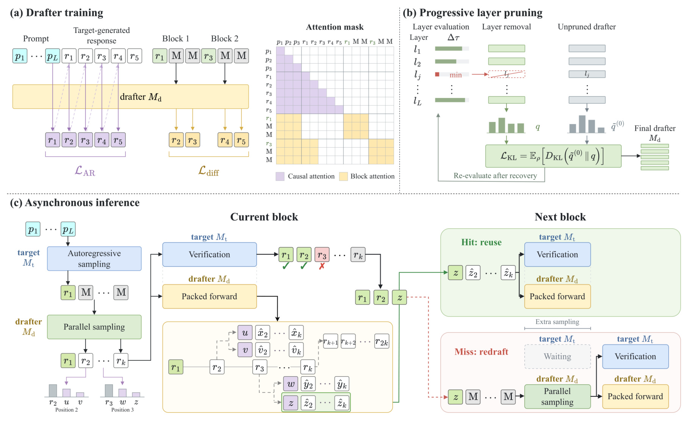
Figure 1 从上方两个面板读到下方运行路径。左上训练面板把目标生成的回答接在提示之后，紫色区域对应主序列上的因果计算和自回归监督，黄色区域标出各个锚点派生的掩码块。左上右侧掩码矩阵的行表示查询位置，列表示能读取的键。正常回答路径仍只能从左侧取历史，每个独立掩码块可向锚点之前的共享前缀读信息，也可在自身内部双向交换表示，但不同块之间隔开。图里的两个掩码块可能以同一响应的不同位置为锚，隔开它们能阻止靠后的块经由打包次序向较早块泄露未来回答。由此获得的块候选是并行计算产物，目标验证仍按真实顺序消费。这种隔离也让训练把多处局部条件样本塞进一趟网络运行，避免为每处锚点重新编码全提示。
右上的层评估把一次删层视为可试验的结构干预。当前保留层逐个临时移出，再用固定目标和块大小比较验收变化。真正移除一层后，固定未剪枝起草器提供恢复分布，剩余层重新适配，图中回环表示下一次重要性排名基于新模型。下方左端是已确认的第一个锚点和起始候选块，中间的目标检查与打包后继前向在同一轮展开。绿色分支表示实际验证前缀吻合已有结果，取出剩余候选开始下一次验证。红色路径表示未命中，要用真实前缀重新起草后才能前进。这个图的主线不是通过提前接受来省掉目标判断，而是尽量让目标完成当前判断时，合法的后继已经准备好。多个备选都被计算却只用其中一个，收益必须以额外硬件时间和命中条件为前提。前两个面板分别改善这笔账的产出和成本。式（1–2）先将同一条目标回答变成多个块训练样本。
符号解释： $r$ 是目标模型对提示 $p$ 生成的回答，$T$ 是回答词元长度，$s_k$ 是第 $k$ 个锚点位置，$K$ 是每条回答采样锚点数，$B$ 是含锚点的块长，$[M]$ 是底座词表中预留给待预测位置的掩码词元。块里的第一项是真实可见的锚点，所以 $B=16$ 表示一次起草十五枚未来候选。回答尾部掩码还可以参加块内注意力，但超出实际回答的部分没有监督，防止固定块长隐式要求模型复现不存在的内容。真实回答前缀来自主因果序列，掩码内部传递的是待预测位置的表示，输入里没有将未来目标答案直接写回同一个块。式（3–5）的训练重点随位置下降，反映第一次拒绝会截断后续收益。
符号解释： $M_d$ 是起草器，$P_{M_d}$ 为其词元分布，$j$ 是掩码位置距锚点的偏移，$b_k$ 为该块有真实标签的位置数，$\ell^{\mathrm{diff}}_{k,j}$ 为单个位置负对数似然，$w_j$ 是位置权重，$\gamma>0$ 控制衰减速度，$Z_{\mathrm{diff}}$ 对有效权重归一化。提前猜对第一、第二枚词元能使较后位置有机会参与验收，而预测后半段即使单项准确也需要前段成立。指数权重把训练重心向较早位置移动，但它是预设代理，并未在损失中显式计算每个样本实际的接收分布。式（6–7）在同一次共享编码的因果路径增加辅助目标。
符号解释： $i$ 为普通因果回答序列位置，$r_i$ 是目标响应词元，$r_{<i}$ 为不含该词元的响应前缀，$\lambda$ 控制因果监督的相对权重。两个目标都用目标模型生成的同一回答。并行目标学在掩码中一次预测多个位置，因果目标约束在无掩码回答前缀上的普通下一个词元。推理时的前缀状态由起草器自己算，辅助训练保持这条前缀编码路径对目标响应的预测能力。 它并不要求线上再额外生成一条自回归草稿。正文消融针对四个任务比较一个训练周期的不同权重，默认权重为一。它与事先选择的底座初始化、固定块长及目标训练数据一起形成实验配置。
2.2 按接收长度逐层裁剪与恢复
剪枝每轮在同一个目标模型和块大小下，分别试去除各个候选层，以验证集平均接收长度下降最少的一层为实际移除对象。随后恢复训练，更新剩余层参数，再重新评估。删除层改变后续模块输入，恢复又会改变已有分工，因此在最初模型上排一次顺序再连续删除，并不能复现原文策略。论文用两个不相交的开发集分别选择层与检查点，每组评估 512 例；用接收长度驱动逐层删除，最终恢复检查点则按验证解码加速选择。流程的目标是缩短打包前向，在减少层数后仍保住足够的连续验收，而不是维持未剪模型的通用语言能力。恢复教师是固定的未剪枝起草器，和学生使用同样的块输入与掩码。监督标签来自目标模型已生成的回答；未剪枝教师在某些掩码位置也可能最偏好另一个词元，因此式（8）与附录式（12–13）先把它的分布往标签方向做最小调整。
符号解释： $q^{(0)}$ 是未剪枝起草器的概率分布，$y$ 是响应里的监督词元，$v$ 遍历其他词元，$m$ 是标签对最大竞争项的原始概率差，$\delta$ 是要求的正边际，$e_y$ 是标签独热分布，$\eta$ 为混合系数，$\widetilde q^{(0)}$ 为调整后的教师。$m\ge\delta$ 时直接令 $\eta=0$，包括 $m=1$ 的退化情况。否则目标差值变成 $m+\eta(1-m)$，取恰好达到要求的最小权重。其余词元整体按同一比例缩放，相对次序保留。这样教师的软分布仍含近邻候选的信息，同时不会在有明确响应监督时让一个竞争项盖过标签。式（9–10）把分布恢复和原训练目标合并。
符号解释： $q$ 是剪枝后起草器的分布，$D_{\mathrm{KL}}$ 为由调整教师到学生的前向 KL 散度，$\mathbb E_\rho$ 为按掩码位置指数衰减权重归一后的平均。块去噪项继续把预测拉向目标响应，辅助因果项维持真实前缀预测，前向 KL 补回学生相对教师失去的概率结构。教师参数和目标模型都不用随恢复更新，线上部署的仍是单个剪枝后的起草器和目标模型。每轮恢复报告运行一万步，这部分离线成本与每轮解码节省分属不同预算。
2.3 为验证结果打包后继块
开始生成时，目标先产出第一枚响应词元作为锚点。起草器用它与已确认前缀生成 $B-1$ 枚候选，目标一次前向计算各位置所需分布。论文第 3.4 节引用标准拒绝采样。以某一草稿词元 $u$ 为例，目标只在经过验证的真实因果前缀上计算接受规则，再决定能否把该候选并入输出。接受及拒绝后抽取候补的规则可写成以下形式。
符号解释： $p_t$ 为目标在相同已定前缀上的分布，$p_d$ 为产生提议所用的起草分布，$a(u)$ 为提议词元的接收概率，$p_{\mathrm{res}}$ 为有拒绝事件时的剩余分布，$v,w$ 遍历词表，$[\cdot]_+$ 为取非负部分。候选按顺序检查，首个拒绝处从剩余分布抽取，整块接收时从目标分布追加。验证若改成贪心，可理解为沿候选对齐目标的逐位置选择。主实验使用非思考模式下的贪心解码，适用的采样公式解释方法的正确性前提，不提供随机采样加速或输出分布回归的实测结果。没有匹配真实前缀的推测块也不能放松验证。目标检查当前块时，起草器对前若干拒绝位置准备替代锚点。每个位置按起草分布取去掉原提议后的前 $F$ 个，分别接到接收前缀再起草后继。全块接收的情况也预备一块。式（11）的预算包括当前块位置和全接收块位置。
符号解释： $N_{\mathrm{async}}$ 是打包输入的词元位置预算，$C$ 是包含全接收情况的覆盖数，$C-1$ 为所覆盖的拒绝位置数量，$F$ 为每位置替代锚点数。加二对应当前被验证的块和全接收后继块。论文默认 $B=16$、$C=12$、$F=2$，得到 384 个位置，其中绝大多数不是本轮已提交的用户可见输出。覆盖更深拒绝点、提高替代宽度都能增加可能匹配的路径，也会增加模型要做的工作和中间状态。命中由含目标新词元的整个已验前缀匹配决定，回退通过真正前缀重新起草。两阶段同时出发时，验证完成可以直接进入下一轮的理想条件是
符号解释： $t_d$、$t_v$ 是并发执行环境下打包起草与目标验证的耗时。$p_{\mathrm{hit}}$ 是一次验证轮次上准备的后继命中概率，二者的统计口径不同。命中但起草尚未完成仍要等待。起草已经结束却未命中仍要回退。验证吞吐变好或批大小变化都可能缩短留给另一张卡的窗口，令既有分支预算失效。论文给出两侧同时启动的理想遮蔽条件，真实服务还须计入跨设备交接和排队。
2.4 附录的选择性预填充
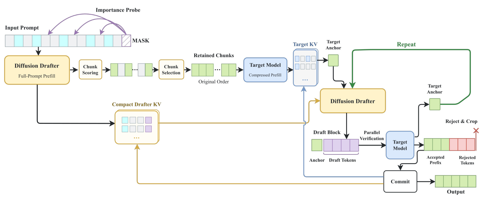
Figure 5 上半部是一条先读取完整输入、再把选中提示送给目标的路径。图左在提示末端放一个掩码重要性探针，让起草器先对完整输入前向并为若干提示块打分。中间选择模块按得分取块，再按原始顺序拼接到期望保留比例附近。目标侧使用这份缩短后的提示预填充，蓝色目标缓存和黄色起草器缓存沿不同的连线保存。起草侧可复用本次任务中已有起草器，不必为筛选训练另一个独立部署模型。图右进入按块提交、目标验证和修剪的循环，目标用保留下来的提示和已经提交的输出验证候选，绿色为进入已确认输出的前缀，红色为不能保留的后缀。与主方法下方的备选分支并行路径不同，此附录实验用顺序推测解码。把这张图与主文的异步时间线混在一起会误解结果表中的端到端收益来源。
这个附录真正改变了目标看到的输入。选择前的完整文本与保留后的短文本可能触发不同答案，尤其在长文摘要和需要回查前段事实时。短提示内部仍遵守目标验证规则，所以验证机制能保证的是给定保留提示后的执行语义。评测必须同时报告任务分数和首字、解码、端到端速度，并与完整提示的目标自回归口径对照。不同类别的任务分数定义也有区别，不能把摘要分值与问答分值直接平均解释成同一个质量指标。它适合看一项额外的质量与延迟交换，以及更大的起草器是否更能识别可删内容。主表的全提示异步结果没有经由这个提示裁剪获得。
3. 实验结果
3.1 七个任务的解码速度与接收
实验目标为 Qwen3-8B、Qwen3-32B。任务覆盖 GSM8K、MATH-500、AIME25 三个数学基准，HumanEval、MBPP、LiveCodeBench-v6 三个代码基准与 MT-Bench 对话。目标生成训练数据来自 Open-PerfectBlend 的提示，数据集有 142 万例，作者按目标对应推荐采样设置在非思考模式再生成响应。主起草器从 Qwen3-8B 初始化并由 36 层剪到 31 层。对齐训练每例 128 个锚点、三个训练周期，作者报 360 GPU 小时，BF16、双 H800、局部批一、累积八、全局批十六。训练取样设置和下列测试的贪心设置不同。对 Qwen3-8B 目标，DSpark 与 EAGLE-3 用公开检查点，其余作者训练的相关基线按正文使用目标生成数据。D3D、SSD 和 PARD-2 用双 H800，DFlash、DSpark、EAGLE-3 用单卡，同属 Transformers 后端。
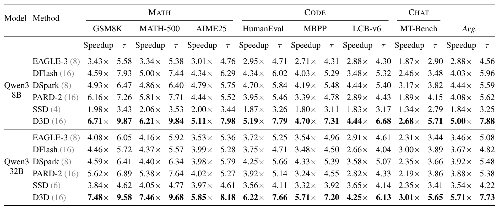
Table 1 每个任务都有速度和 $\tau$ 两栏。前者是相对目标自回归解码的倍率，后者是一轮最终新增的输出词元数，含目标自己补的一枚。在 8B 目标组，D3D 平均 5.00 倍、每轮 7.88 枚，DFlash 为 4.03 倍、5.96 枚，DSpark 为 4.44 倍、5.59 枚。D3D 对 32B 目标为 5.71 倍、7.73 枚，DFlash 为 3.67 倍、4.82 枚，DSpark 为 3.92 倍、5.48 枚。最佳单点为 32B GSM8K 的 7.48 倍；如果读同列的均值，不能把它推广成七任务的共同速度。作者所写相对最优基线平均增幅 12.6% 和 45.7%，分母分别是 DSpark 的 4.44 倍、3.92 倍，不是直接在原模型准确率上加百分点，也不代表每卡吞吐增加同一比例。
两组目标中 D3D 在所有列的平均接收长度均超过表内其他方案，但 8B 目标的 LiveCodeBench-v6 与 DSpark 同为 4.44 倍，MT-Bench 的 D3D 2.68 倍低于 DSpark 3.17 倍。尤其对话列 D3D 的 $\tau$ 为 5.71、DSpark 只有 3.82，说明较长接收依然可能被起草或验证成本抵消。32B 对话的 D3D 3.01 倍与 DFlash 3.00 倍非常接近，论文没有给这项细小差值的不确定度。异步同类基线方面，PARD-2 平均 4.08/3.88 倍，SSD 1.84/3.54 倍。这组对照显示 D3D 超过本次配置的双卡异步实现，也同时改变了起草器、覆盖和缓存策略。评估无法从这些行独立量化调度重叠、训练和层裁剪各自贡献。读这张表更适合把目标规模、任务和两种指标一起保留。比如用 32B 目标时，D3D 的 GSM8K 与 MATH-500 每轮增量几乎相同，对应倍率也都接近 7.5，但换到 LiveCodeBench-v6 后，每轮 6.13 枚、4.25 倍。即便目标与同一种起草器固定，平均接收也随输出任务变化。表里是各基准各自的相对倍率，七列平均没有采用服务端的真实流量权重、输出长度权重或请求成本权重。若线上以闲聊和短回复为主，数学基准中最大的两项不应主导成本预测。
3.2 并发服务的聚合解码速率
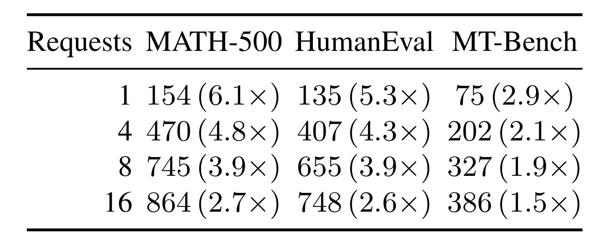
Table 2 换成 D3D-1.7B 与 Qwen3-32B 的组合，使用 Transformers 和 SDPA。行是同时请求数，单元格外层数字是聚合解码词元每秒，括号是相对自回归同设置倍率。MATH-500 从一请求的 154 词元每秒增加到十六请求的 864，倍率却从 6.1 降到 2.7。HumanEval 为 135 到 748，倍率 5.3 到 2.6。MT-Bench 为 75 到 386，倍率 2.9 到 1.5。吞吐随并发上升、相对收益下降可以同时成立，因为普通自回归基线也会从批量执行受益。把并发十六的 864 除以请求数只能得到粗略总速率分摊，原表没有提供每个请求的分布、请求开始和完成时间、首次输出或排队耗时。
对照主表还要注意模型身份。主结果使用经剪枝的 D3D-8B，而这里把起草模型减到 1.7B 名称的版本。两个设置中的单并发倍率差异不能直接当作纯粹的并发曲线，也不能归到接收率或显存这一个因素。对于长短混合请求，宽批可能提升总体产出，也可能因某些请求的未命中回退让单请求间隔出现长尾。原表没有连续批处理和高负载队列的证据。将单请求解码速度换成生产可用的单位显卡吞吐，需要与两张卡同时用作目标服务的策略对照，并在相同输出条件下报告尾部时间。作者自己也在限制中留下了这项缺口。从八到十六请求，三个任务的总吞吐分别从 745 到 864、655 到 748、327 到 386，增加幅度均远小于并发翻倍。这个局部结果提醒评测侧关注饱和点，但表内没有显卡占用与内存用量，不能把增长放缓唯一归因到通信或草稿侧。更可复现的比较方式是在每档并发保留目标验证宽度、起草打包大小、批内输出长度与两套缓存占用。
3.3 辅助监督、规模和剪枝
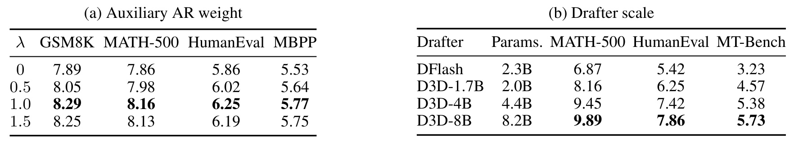
Table 3 左面板固定 D3D-1.7B 的块大小和目标，在一个周期里改变辅助权重。权重从零到一时，GSM8K 的接收长度 7.89→8.29，MATH-500 7.86→8.16，HumanEval 5.86→6.25，MBPP 5.53→5.77。0.5 各列已有改善，1.5 较 1.0 略回落，说明在这组设定中多保留一些因果监督能帮助独立起草，但把权重继续加大没有同方向增量。四列同向让这个解释比只选数学例子更扎实。量到的是对齐目标的接收结果，表内没有验证辅助监督对通用困惑度、响应正确率或另一目标的单独变化，也没有足够重复试验支撑最优权重精确落在一点零。
右面板读实际参数列而不是直接读模型昵称。D3D-1.7B 对应 2.0B 总参数，DFlash 此处为 2.3B。前者在 MATH-500、HumanEval、MT-Bench 为 8.16、6.25、4.57，后者为 6.87、5.42、3.23。D3D 增至 4.4B 时 MATH-500 提升 1.29 枚，再到 8.2B 只增加 0.44 枚，另外两列也体现边际递减。这说明较高的接收结果并非只能借助一套比 DFlash 更大的起草器，不过两种架构的输入、层和状态处理不同，参数大小无法直接换算成延迟。一趟打包前向涉及的前缀缓存、掩码和内核形态才决定能否塞进目标验证时间内。原表以接收长度比较模型选型，实际服务还要对比相同批量和资源限制下的运行数据。这里的左、右半表也不能拼成一个全因子实验。左侧小模型改权重可回答辅助项在固定尺寸上的作用，右侧改参数量观察扩展趋势，无法判断较大尺寸是否需要不同权重。更不能直接把 1.7B 与 8B 间的增量扣去小模型权重变化，就得到预训练、架构或独立前缀计算各自的边际收益。要区分交互影响，需要在每个参数规模都重复有无因果监督的训练。
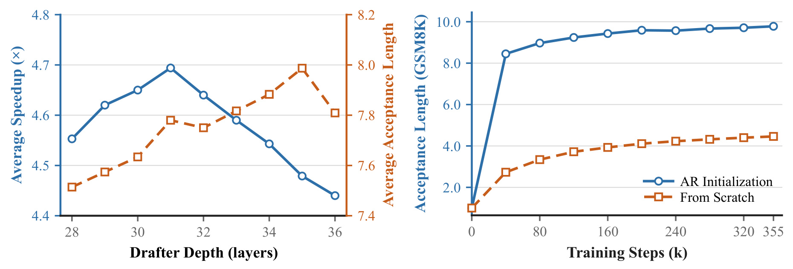
Figure 2 左图横轴是起草器保留层数，蓝线用左轴表示平均速度倍率，橙线用右轴表示 MATH-500、HumanEval、MT-Bench 的平均接收长度。36 层约 4.44 倍，31 层约 4.69 倍，按作者报告仍保留原始接收长度的 99% 以上。深度相对少约 13.9%，加速倍率的相对改善约 5.6%，不能拿前一个数字当运行时节省。图上局部深度的接收值也有波动，无法断言每层越多就按平滑曲线增长。继续减少到 31 层以下，图上接收长度和加速都往不利方向走，节省前向计算已经抵不过每轮少出的词元。这是对剪枝与恢复联合产物的证据，没有分开证明一次性多层裁剪、去掉恢复或换别的层排序都能达到同一速度。
右图横轴为训练步千数，纵轴为 GSM8K 的接收长度。两条曲线的起草器结构和预算固定，比较 Qwen3-8B 预训练初始化与随机初始化。前者在早期跃升并在最后到约 9.8，后者缓慢增加到约 4.5，说明在给定训练预算里，先具备自然的词元前缀预测能力可显著降低后续对齐难度。该图未给随机初始化训练更久后的渐近结果，也没有在更小底座上复制完全相同的初始化消融。它能够支持的是同一个预算下从预训练起步更有效，后续是否还应为起草器专门增加预训练成本，需要看目标更换的频率与已有底座是否匹配。
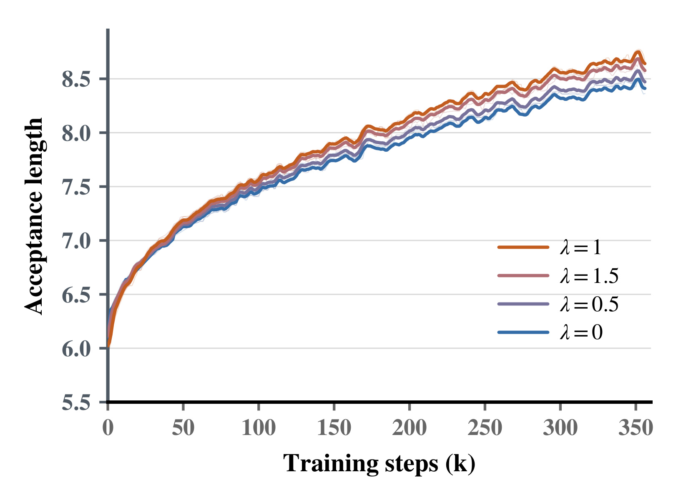
Figure 4 用附录曲线复查 Table 3 左半部的结论是否只出现在终点。横轴为训练步数千，纵轴为 GSM8K 的平均接收长度，四根线分别对应辅助权重零、零点五、一和一点五。初始阶段几条线接近，随着训练推进，非零权重在后段逐渐拉开，权重一通常在上方。一点五没有比一提供稳定额外收益。曲线有局部波动，因而观察到的差值应描述为训练过程中的总体趋势。图中的曲线末端读数和主文 Table 3 报告的绝对终点值不完全相同，论文没有在图注和表注交代能让读者逐值对齐的记录点或评测细节，宜分别引用曲线趋势与表中数值。
这个纵向检查回答的是因果辅助项的优势是否持续存在，并未新增任务范围。图中只给 GSM8K，没有代码和对话类曲线，也没有误差带或多随机种子。训练监控如果想复现实验，应把每次验收的目标模型、解码模式、样本和评测检查点锁定，将训练中的即时统计与最终统一任务表分开。只把两条曲线最后一个像素的差读成最终提升，可能混入检查点和波动。对部署选择而言，持续领先有助于避免凭一个训练快照挑权重，仍需用最终部署的任务混合测每轮接收与速度。
3.4 覆盖、块大小和锚点密度
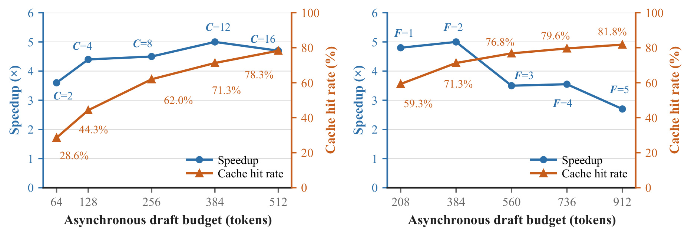
Figure 3 的两幅图都横排每趟打包计算的位置预算，蓝线是相对解码速度，橙线是验证后继命中比例。左图固定每个位置两个替代锚点，从 $C=2$ 逐渐增大拒绝位置覆盖。默认的 $C=12$ 需要 384 个位置，命中 71.3%，蓝线接近五倍。把 $C$ 拉到 16，位置数变为 512，命中升至 78.3%，蓝线反而回落。右图固定 $C=12$，把每个位置的宽度从一到五。宽度五时需要 912 个位置，命中 81.8%，速度低于宽度二。覆盖位置与同一位置的替代词元数量是两种不同的预算使用方式，两幅图通过默认设置交汇，可以看在同一 AIME25、31 层起草器及目标配置下的相对边际收益。
图中不存在一条“命中率越高、墙钟速度越快”的单调关系。较低预算即使计算快，也更常需在验证结束后同步起草。较高预算则让每一轮都额外算更多分支，可能把原本能隐藏的工作推到验证之后。衡量一条预备分支的价值，需要知道它兑现了多少等待时间，以及一次前向处理它占了多少算力与内存。单一横轴的预算数也无法表达前缀长度和并发批带来的不等执行成本。原图只扫了一个任务和特定硬件后端，适合作为调参机制证据。对不同任务和线上流量，优先复测两个方向的扫描曲线，而非直接把 384 个位置当作固定部署常数。
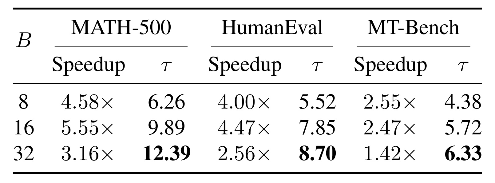
Table 4 比较分别以块大小八、十六、三十二训练一个周期的 D3D-8B，并使用其各自训练块大小进行异步推理。MATH-500 在块十六时 5.55 倍与 9.89 枚，块三十二时接收增至 12.39，却降至 3.16 倍。HumanEval 对应从 4.47 倍和 7.85 枚变成 2.56 倍和 8.70 枚。MT-Bench 则连从八改到十六都稍慢，2.55 降到 2.47 倍，尽管 $\tau$ 从 4.38 增至 5.72。增加块长会改变每轮能交付的上限，也增加掩码位、要验证的位置和未被接收的尾部。固定倍数之外，如果并发导致更宽的验证消耗增加，块的最优点可能移动。作者以三任务平均加速选择十六，它比更大块的每轮产出更低但关键路径更短。
这与 Figure 3 的关系在于大块同时放大每一个备选分支的宽度，虽然后继覆盖参数保持不变时也会增长总位置量。表中同时训练不同长度的起草器，因此不能完全隔离在一个固定检查点临时改推理块大小的影响。还要避免将 MATH-500 5.55 倍与主表 6.21 倍的差直接归为一个配置参数。主表使用按验证选择的已裁剪模型，训练周期与附录块消融并不一致。该表能支持的结论是，在报告的配套训练与解码设置中，接受更长的草稿可能付出更多时间，选择超参时同时读取两列。
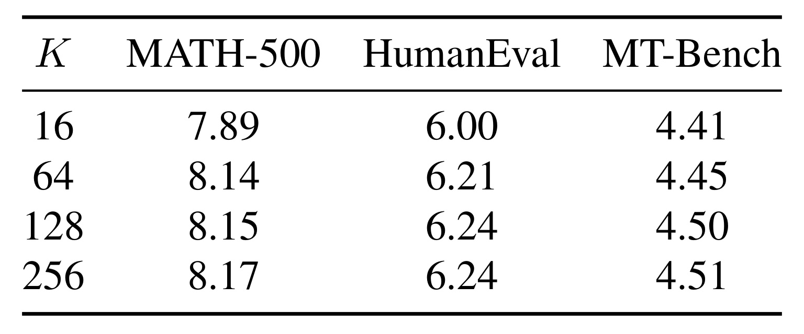
Table 5 里的 $K$ 表示每条训练响应采多少锚点，和 Figure 3 的上线后继分支个数不是同一个量。对一个周期的 D3D-1.7B，锚点十六到六十四使 MATH-500 7.89→8.14，HumanEval 6.00→6.21，MT-Bench 4.41→4.45。六十四加到一百二十八后三项为 8.15、6.24、4.50，再翻倍到二百五十六只变为 8.17、6.24、4.51。训练生成响应平均少于 2048 枚词元，每个锚点覆盖至多十五枚后继，许多块会对同一片段重复监督。共享前缀能够避免重复编码整段提示，但每个新块仍要在打包前向里占位置。继续提高密度得到的信号不一定能补偿这部分计算。作者选择一百二十八，主要是给三任务保留少量提升并避免继续翻倍。
表里没有训练总耗时列，也没有为不同响应长度给自适应锚点的对照，无法算出从一百二十八改为六十四能节约多少训练工时。长响应上的错误集中段和短回答可能需要不同锚点策略。若迁移到结构化检索序列，目标字段较短且不同阶段信息量很不均衡，均匀增加锚点未必有额外价值。应当先看标签覆盖是否在前几步、易出错的位置和不同条件格式上过分集中，再用目标验证的实际连续接收和训练时长对照。该表的支撑范围是当前开放指令数据与三个任务。
3.5 长提示的质量与首字代价
Table 6 使用 D3D-1.7B、Qwen3-32B，在 LongBench 原版五类十八个数据集上，比较完整提示与保留约三成、两成、一成的方案。Score 是类别自己的指标，其余列相对完整提示目标自回归。完整提示加起草器时，五类首字倍率在 0.81 到 0.90 之间，虽然解码倍率全部大于一，仍因引入起草侧预填充和首块操作而慢于自回归的首字。以单文档问答为例，保留一成后，首字 0.84→2.91 倍、端到端 1.46→3.56 倍，但分数 47.91→41.27。摘要在一成保留时端到端 3.00 倍，分数 24.07→21.17。多文档问答的端到端从保留两成的 2.54 倍回落到一成的 2.42 倍，说明删得更多未必连延迟也继续变好。
少样本学习在三成和两成保留比分数完整提示略高，不能由这一列推断输入压缩普遍有质量增益。可能是选择去除了干扰，也可能是数据集类别聚合下的波动，原表没有提供置信区间。问答可能只需要少量证据，摘要通常需要更广的内容覆盖，输入削减的损失机制不同。对于线上检索增强问答，更应按证据密度、多跳要求、指令与正文相对位置分桶观察，确认快点是不是恰好丢了长尾证据。尤其首字和完整响应的计时边界各不相同，单看解码倍率掩盖了完整提示下首字受损这一事实。
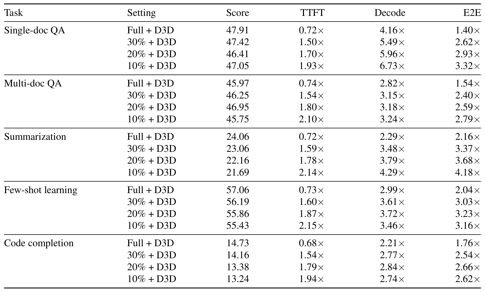
Table 7 在同一个目标上换为 8B 起草器。单文档问答保留一成时，分数 47.05 接近完整提示的 47.91，端到端从 1.40 倍到 3.32 倍。与 Table 6 同为一成时的小起草器 41.27、3.56 倍相比，较大模型保留的问答表现更强，整条链路倍率却略低，且首字只有 1.93 倍而非 2.91 倍。多文档问答保留两成时 46.95、2.59 倍，完整提示 45.97、1.54 倍。一个任务组的小幅分数提高可以记录，但无方差或逐任务数据时不能判定压缩比原输入更可靠。摘要保留一成时端到端 4.18 倍、分数从 24.06 掉到 21.69，代码补全三成保留时分数也从 14.73 掉到 14.16，压缩的代价因任务而异。
表中完整提示的较大起草器首字倍率比小起草器更低，例如单文档问答 0.72 对 0.84。即使同一个起草器兼做输入筛选与后继提议，完整提示的第一次前向和额外状态不会免费。作者的结论可以拆成两条证据：大起草器在某些问答上更能从很短的输入保留证据；切短目标上下文后，首字和生成阶段可以同时节约时间。两条需要各自的质量指标和运行指标，不能推广成全提示异步推测解码在长上下文下仍有同样倍率。若业务必须保持完整输入语义，基线应是完整提示组，压缩组另立质量阈值。
4. 总结
4.1 怎样判断起草是否真的被隐藏
D3D 值得借鉴的是把起草的预测质量和起草是否压在验证关键路径上分别测量。选一个候选层时看少了多少可接收输出，选择最终深度时回到解码速度，调整异步分支时再看命中与预算的曲线。这些指标的顺序决定了调参方向。只看命中会选到更多无用分支，只看每轮词元数会倾向更长的草稿。对生成式检索，可以在保持同一索引快照与合法前缀的条件下记录候选准备、目标评分、实际匹配和回退这四段；只有新请求或新轮次能直接使用缓存状态，准备分支才会节约下一轮时长。分支在库存或内容状态切换后失效时，要把重算与丢弃的成本一起记账。
4.2 局限
- 主表双 H800 对单卡同步基线的比较提供整体解码延迟证据，同预算使用两张卡做目标张量并行或双副本的效益仍未知。参数规模较大的起草器还占一份模型显存与分支缓存，部署前需要同显卡预算下的吞吐和延迟分位数。
- 主实验使用非思考模式贪心解码，训练响应的采样设置与推理解码不同。温度、输出约束、提示结构、目标量化或新检查点都会改变起草匹配程度。标准拒绝采样给出正确性前提，随机条件下的命中、回退和速度仍需实测。
- 选择的起草器在对话上有较小的实际加速，8B MT-Bench 甚至落后 DSpark。单张加速主表也未记录失配轮次的等待尾部，最大并发仅十六且使用较小起草器。结果还缺 vLLM 或 SGLang 及连续批处理等生产栈对照。
- 删层试探、固定教师与每轮恢复增加离线成本。论文对两个目标使用相应的目标生成响应，目标迭代后的起草复用周期、训练样本分布迁移和在线收益摊销没有量化。
- 选择性预填充改变了目标实际看到的提示。读摘要、代码补全和问答时应同时保留分数下降与首字、解码、全程时间，尤其不能用文档问答一个有利组覆盖摘要损失。
4.3 跟进
- 在相同 GPU 总数、目标权重、精度、输出配置下复测双卡 D3D、双副本、目标张量并行与一个异步基线。报告每卡词元每秒、每请求首字和输出间隔、端到端中位数与长尾。按任务与输出长度分组以识别对话的收益缺口。
- 把每轮起草与验证时间、命中路径、同步回退时间和预算消耗记录在同一时间轴。再按并发数、前缀长度、目标规模扫描覆盖位置和锚点宽度，检验单任务 AIME25 的内部最优点能否重现。
- 单独核验结构化生成中的分布约束及索引一致性。以固定候选词表和合法前缀测等输出，在有物品更新和约束变化的回放里测错误候选、分支失效以及回退；若启用提示筛选，另测证据召回、指令保留和关键字段一致性。
- 对同一组目标响应训练一个起草模型，重复不同删层顺序或冻结与恢复策略，对照接收长度及速度变化，保留每次验证和检查点选择的数据隔离。它能估计离线训练成本对最终关键路径改善的实际边际收益。尤其需要把逐层选择消耗的验证次数和每次恢复训练步数加入模型更换成本，再判断频繁更新目标的服务是否来得及重新对齐。